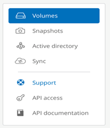
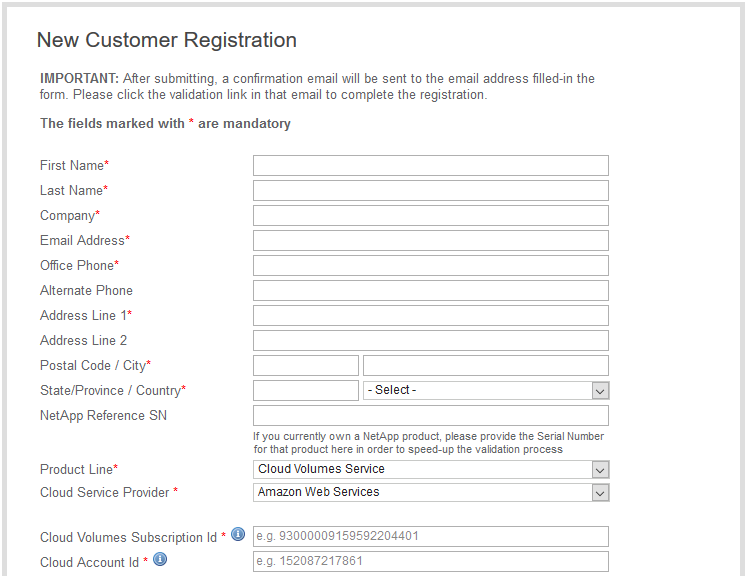

릴리스 정보
릴리스 정보
지원 권한 활성화 및 지원 액세스
 변경 제안
변경 제안
AWS 마켓플레이스에 구독한 후 바로 Cloud Volumes Service에 액세스할 수 있다면 지원 권한을 활성화하는 것이 좋습니다. 지원 권한을 활성화하면 온라인 채팅, 웹 티켓 시스템 및 전화를 통해 기술 지원에 액세스할 수 있습니다.
기본 지원 수준은 일련 번호 활성화 및 등록이 완료될 때까지 셀프 서비스입니다.
지원 권한 활성화 중
Cloud Volumes Service for AWS의 초기 구독 프로세스 중에 클라우드 볼륨 인스턴스가 "930"으로 시작하는 20자리 NetApp 일련 번호를 생성합니다. NetApp 일련 번호는 AWS 계정에 연결된 Cloud Volumes Service 가입을 나타냅니다. 지원 자격을 활성화하려면 NetApp 일련 번호를 등록해야 합니다. NetApp은 2가지 지원 등록 옵션을 제공합니다.
-
기존 NetApp NSS(Support Site) SSO 계정을 가진 현재 NetApp 고객
-
기존 NetApp Support Site(NSS) SSO 계정이 없는 새로운 NetApp 고객
옵션 1: 기존 NetApp Support Site(NSS) SSO 계정을 가진 현재 NetApp 고객
-
Cloud Volumes Service URL로 이동하거나 을 통해 이 서비스에 액세스합니다 "NetApp Cloud Central 포털". 그런 다음 NetApp Cloud Central 자격 증명으로 로그인합니다.
-
Cloud Volumes Service UI(사용자 인터페이스)에서 지원을 선택하여 NetApp 일련 번호를 표시합니다.
 -
지원 페이지에서 지원 상태가 "등록되지 않음"으로 표시되는지 확인합니다.

지원 상태 및 NetApp 일련 번호가 표시되지 않으면 브라우저 페이지를 새로 고치십시오.
-
지원 활성화를 클릭하여 NetApp 일련 번호를 등록합니다.
-
NSS 계정이 있는 경우 지원 활성화 페이지에 NSS 자격 증명(사용자 이름 및 암호)을 입력하고 활성화를 클릭하여 NetApp 일련 번호에 대한 지원 권한을 활성화합니다.

-
기존 NetApp 고객이지만 NSS SSO 자격 증명이 없는 경우 로 이동하십시오 "NetApp Support 등록 사이트" 계정을 먼저 생성합니다. NSS 자격 증명에 등록하려면 여기 로 돌아가십시오.
-
신규 NetApp 고객인 경우 아래 옵션 2의 지침을 참조하십시오.
-
NetApp 일련 번호가 활성화되면 지원 페이지에 "등록" 상태가 표시되어 지원 자격이 활성화되었음을 나타냅니다.
해당 Cloud Volumes Service 일련 번호에 대한 1회 지원 등록입니다. 새로운 Cloud Volumes Service 서브스크립션 및 후속 새 제품 번호도 지원 활성화가 필요합니다. 지원 등록과 관련하여 궁금한 점이나 문제가 있으면 cvs-support@netapp.com 으로 문의하십시오.
옵션 2: 기존 NetApp Support Site(NSS) SSO 계정이 없는 새로운 NetApp 고객
-
로 이동합니다 "클라우드 데이터 서비스 지원 등록" 페이지로 이동하여 NSS 계정을 만듭니다.
-
"등록된 NetApp 고객이 아닙니다."를 선택하면 신규 고객 등록 양식이 표시됩니다.
 -
양식에 필요한 정보를 입력합니다.
-
이름과 회사 정보를 입력합니다.
-
Cloud Volumes Service 을 제품 라인으로 선택하고 클라우드 서비스 공급자로 Amazon Web Services**를 선택합니다.
-
다음 두 필드에 NetApp 일련 번호 및 AWS 고객 ID를 Cloud Volumes Service 지원 페이지에서 입력합니다.
-
등록 제출 을 클릭합니다.
-
-
제출된 등록으로부터 확인 이메일을 받게 됩니다. 오류가 발생하지 않으면 "Registration Submitted successfully(등록 제출이 완료되었습니다)" 페이지로 이동합니다. 또한 1시간 이내에 "귀하의 제품은 현재 지원 대상입니다"라는 이메일을 받게 됩니다.
-
또한 새로운 NetApp 고객은 이후의 지원 활성화를 위해 NetApp NSS(Support Site) 사용자 계정을 만들고 기술 지원 채팅 및 웹 티켓 판매에 대한 지원 포털에 액세스해야 합니다. 로 이동합니다 "NetApp Support 등록 사이트" 를 눌러 이 작업을 수행합니다. 새로 등록한 Cloud Volumes Service 일련 번호를 제공하여 프로세스를 신속하게 처리할 수 있습니다.
해당 Cloud Volumes Service 일련 번호에 대한 1회 지원 등록입니다. 새로운 Cloud Volumes Service 서브스크립션 및 후속 새 제품 번호도 지원 활성화가 필요합니다. 지원 등록과 관련하여 궁금한 점이나 문제가 있으면 cvs-support@netapp.com 으로 문의하십시오.
지원 정보 얻기
NetApp은 다양한 방법으로 Cloud Volumes Service를 지원합니다. 기술 자료(KB) 기사 또는 NetApp 커뮤니티 등 광범위한 무료 셀프 지원 옵션이 24x7 제공됩니다. AWS SaaS 마켓플레이스에서 구입한 Cloud Volumes Service 구독에는 채팅, 이메일, 웹 티켓 또는 전화를 통한 원격 기술 지원이 포함됩니다. 이러한 셀프 서비스 지원 옵션을 사용하려면 먼저 각 NetApp 일련 번호에 대한 지원을 활성화해야 합니다. NetApp NSS(Support Site) SSO 계정은 케이스 관리와 함께 채팅 및 웹 티켓팅에 필요합니다.
기본 메뉴에서 지원 탭을 선택하여 Cloud Volumes Service UI에서 지원 옵션에 액세스할 수 있습니다. 사용 가능한 지원 옵션은 평가판 모드인지 구독 모드인지에 따라 다릅니다.
자체 지원
이 옵션은 평가판 모드에서 사용할 수 있으며 연중무휴 24시간 무료로 제공됩니다.
-
"기술 자료"이 섹션의 링크를 선택하면 NetApp 기술 문서로 이동합니다. 여기에서 Cloud Volumes Service 관련 기사, 사용 방법, FAQ 또는 고장 수리 정보를 검색할 수 있습니다.
-
https://docs.netapp.com/us-en/cloud_volumes/aws/ 여기를 클릭 링크를 선택하면 Cloud Volumes Service for AWS 설명서 센터로 이동합니다.
-
http://community.netapp.com/t5/Cloud-Volumes/bd-p/CloudVolumes 여기를 클릭 링크를 클릭하면 Cloud Volumes Service 커뮤니티로 이동하여 동료 및 전문가와 연결할 수 있습니다.
-
전자 메일 선택 피드백 섹션의 [여기 클릭] 링크를 클릭하면 cvs-support@netapp.com 통해 지원 이메일이 시작됩니다. 서비스에 대한 일반적인 질문을 하거나, 피드백과 제안을 제공하거나, 온보딩 관련 문제에 대한 지원을 요청할 수 있는 훌륭한 장소입니다.
구독 지원
위의 자체 지원 옵션 외에도 Cloud Volumes Service 유료 가입이 있는 경우 NetApp 지원 엔지니어와 협력하여 문제를 해결할 수 있습니다.
Cloud Volumes Service 일련 번호가 활성화되면 다음 방법 중 하나를 통해 NetApp 기술 지원 리소스에 액세스할 수 있습니다. 이러한 지원 옵션을 사용하려면 활성 Cloud Volumes 구독이 있어야 합니다.
을 클릭하여 영업 지원을 요청할 수도 있습니다 "영업 담당자에게 문의하십시오" 링크.
Cloud Volumes Service 일련 번호는 지원 메뉴 옵션에서 서비스 내에 표시됩니다. 서비스에 액세스하는 데 문제가 있고 이전에 NetApp에 일련 번호를 등록한 경우 cvs-support@netapp.com 에 지원을 문의할 수 있습니다. 또한 NetApp Support 사이트에서 다음과 같이 Cloud Volumes Service 일련 번호 목록을 확인할 수 있습니다.
-
에 로그인합니다 "mysupport.netapp.com".
-
제품 > 내 제품 메뉴 탭에서 제품군 SaaS Cloud Volume을 선택하여 등록된 모든 일련 번호를 찾습니다.